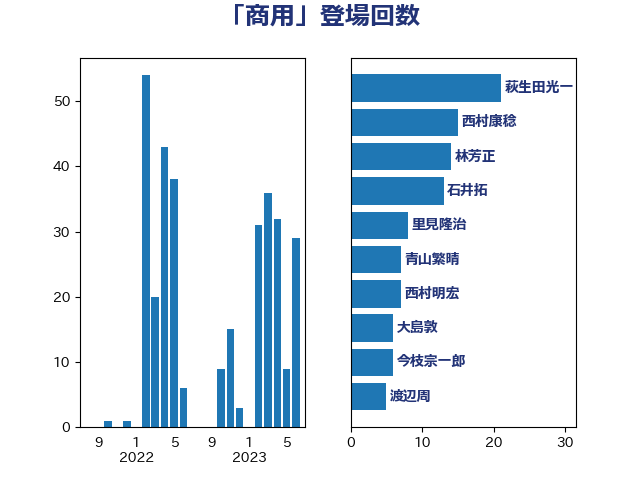

単語「商用」

| 萩生田光一 | 自由民主党 | 21 回 |
| 梶山弘志 | 自由民主党 | 13 回 |
| 茂木敏充 | 自由民主党 | 12 回 |
| 林芳正 | 自由民主党 | 10 回 |
| 岸信夫 | 自由民主党 | 7 回 |
| 石井拓 | 自由民主党 | 7 回 |
| 岩渕友 | 日本共産党 | 6 回 |
| 大島敦 | 立憲民主党 | 5 回 |
| 渡辺周 | 立憲民主党 | 5 回 |
| 青山繁晴 | 自由民主党 | 5 回 |
| 山岡達丸 | 立憲民主党 | 4 回 |
| 山崎誠 | 立憲民主党 | 4 回 |
| 古川元久 | 国民民主党 | 3 回 |
| 國場幸之助 | 自由民主党 | 3 回 |
| 岸田文雄 | 自由民主党 | 3 回 |
| 金城泰邦 | 公明党 | 3 回 |
| 大塚耕平 | 国民民主党 | 2 回 |
| 大野泰正 | 自由民主党 | 2 回 |
| 安達澄 | 無所属 | 2 回 |
| 市村浩一郎 | 日本維新の会 | 2 回 |
| 朝日健太郎 | 自由民主党 | 2 回 |
| 本田太郎 | 自由民主党 | 2 回 |
| 浜口誠 | 国民民主党 | 2 回 |
| 石井章 | 日本維新の会 | 2 回 |
| 竹谷とし子 | 公明党 | 2 回 |
| 若松謙維 | 公明党 | 2 回 |
| 里見隆治 | 公明党 | 2 回 |
| 中司宏 | 日本維新の会 | 1 回 |
| 佐藤啓 | 自由民主党 | 1 回 |
| 佐藤英道 | 公明党 | 1 回 |
| 室井邦彦 | 日本維新の会 | 1 回 |
| 小泉進次郎 | 自由民主党 | 1 回 |
| 山口壯 | 自由民主党 | 1 回 |
| 川田龍平 | 立憲民主党 | 1 回 |
| 斉藤鉄夫 | 公明党 | 1 回 |
| 有村治子 | 自由民主党 | 1 回 |
| 木村英子 | れいわ新選組 | 1 回 |
| 杉田水脈 | 自由民主党 | 1 回 |
| 横山信一 | 公明党 | 1 回 |
| 江島潔 | 自由民主党 | 1 回 |
| 河西宏一 | 公明党 | 1 回 |
| 片山大介 | 日本維新の会 | 1 回 |
| 磯崎仁彦 | 自由民主党 | 1 回 |
| 稲津久 | 公明党 | 1 回 |
| 笠井亮 | 日本共産党 | 1 回 |
| 落合貴之 | 立憲民主党 | 1 回 |
| 藤川政人 | 自由民主党 | 1 回 |
| 鈴木英敬 | 自由民主党 | 1 回 |
| 高村正大 | 自由民主党 | 1 回 |
| 高橋光男 | 公明党 | 1 回 |